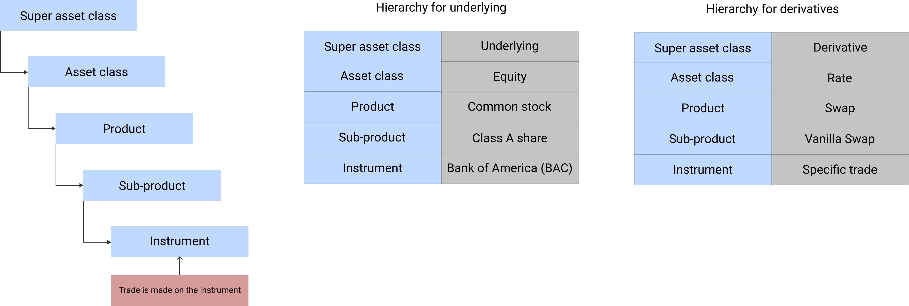
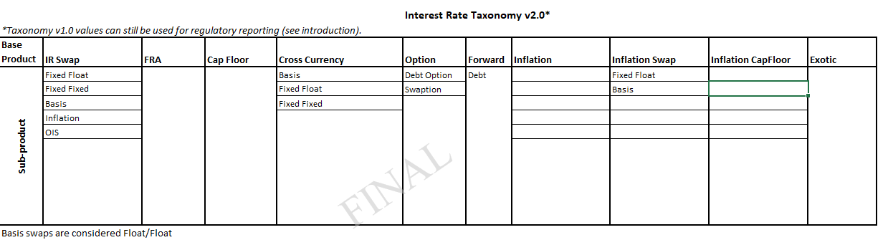

Unique Product Identifier (UPI) and ISDA Taxonomy for OTC Derivatives
The regulations for OTC Derivatives, Dodd Frank Act in USA and European Market Infrastructure Regulations (EMIR) in EU, require three (3) reference data for OTC derivatives reporting purposes. In response to these regulations, the following three reference data have been developed.
- LEI (Legal Entity Identifer) for identifying the reporting entity
- UPI (Unique Product Identifer) for identifying the products being traded
- UTI (Unique Trade Identifier) for identifying the actual transaction that has taken place between the parties
At the top of the heap is the Super Asset Class. This comprises of assets such as Money, Bond, Equity, Forex and Commodities for Underlying; Rate, Credit, Equity, FX and Commodity for Derivatives; and Structured Credit and Structured Investment for Structured Finance. Under the Super Asset Class is Asset Class. Sometimes the super asset class and asset class are the same. Under the Asset Class is Product; Under the product is Sub-Product. For some products there may not be any sub-products. And finally, under the sub-product is instrument. The below diagram provides an easy way to understand this hierarchy.

For our discussion, we are only focussing on the Derivative Super Asset Class, and in particular OTC Derivatives (OTCD) asset class. The three main basic derivative instrument types under OTCD are forwards, swaps and options. It is quite straight forward to develop a unique identification system for these simple products. However, the OTCD market also trades exotic or complex products, which can be a combination of one or more of these three instruments, while others can include components which are not derivatives. Examples include trades such as baskets, accumulators and quanto synthetic forwards. It is a bit difficult to identify these products and their variants on a consistent basis. Developing a reference data for these products, while at the same time making them future proof, is tricky, time consuming and expensive.
The requirement to develop a unique product identifier stems from the necessity to have a global data harmonization, improving data quality and increasing the efficiency and value of reporting, as proposed by CPMI (Committee on Payments and Market Infrastructure) and IOSCO (International Organisation of Securities Commissions).
The following are the three non-proprietary classification systems that are available for identifying derivative products.
- Classification of Financial Instruments (CFI)
- ISDA Derivatives Taxonomy; and
- ISIN (International Securities Identification Number)

For CFTC reporting under Dodd Frank Act in US, ISDA Taxonomy is widely used.
As stated above, there is currently no single global product identifier for all reporting regimes. ISDA Taxonomy may become the global UPI standard.
ISDA Taxonomy
The ISDA Taxonomy has two versions - v1.0 and v2.0. The original ISDA OTC Derivatives Taxonomy (v1.0) has been in use for cross-jurisdictional reporting for Credit, Rates, Equities, Commodities and FX since 2012. The v2.0 was developed in the year 2015 but was not published until September 3, 2019.On 3rd January 2018, MiFID II / MiFIR came into force. MiFIR mandated the use of ISIN for derivatives. ANNA-DB (Association for Numbering Agencies), generator for OTC derivatives ISINs, has built its derivatives instrument definitions and product templates based on ISDA Taxonomy 2.0.
Parties to OTCD contracts can use both the versions of ISDA Taxonomy.
In my article on "Smart Derivative Contracts", I had discussed that standardisation of products, clauses, infrastructure, methods, processes and systems is one of the pre-requisites for Smart Derivative Contracts. ISDA's Product Taxonomy is an effort to standardise product classifications. It is paving the way for a global unique identification system of all derivative products - both exchange traded and OTC, but predominatly focussed on OTC. Once properly developed and in place, it shall become the bedrock for all other classification systems, thereby bring about uniformity in identification and reporting. A globally acceptable unique product identifer will help in the following situations.
- For ESMA liquidity and SI computation (SI stands for Systemic Internalizers)
- Public price reporting for pre and post trade transparency purposes
- Regulatory reporting
- Communication of pre-execution requests for quotes and orders
- Portfolio reconciliation and valuation across market participants
The below is a sample ISDA Taxonomy for Interest Rates.
